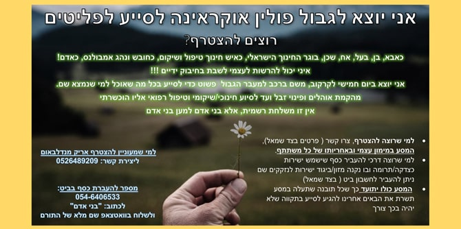
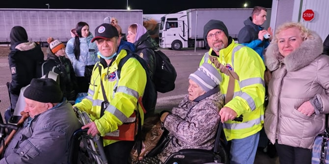
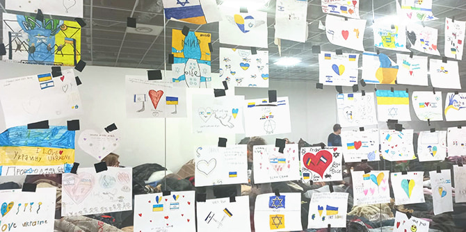
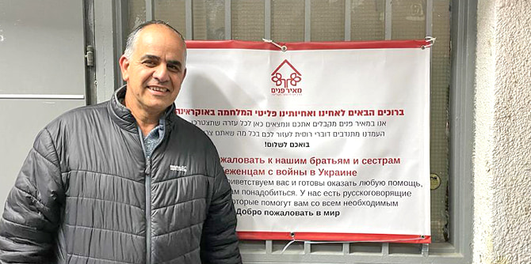

אריק מנדלבאום, בוגר מחזור כ"ב בבית ספר מנדל למנהיגות חינוכית, מנכ"ל מרכז שילוב. מספר: ערב אחד, לאחר שסיימתי משמרת במד"א בהתנדבות, הרגשתי שאני חייב לעשות מעשה. פרסמתי פוסט בפייסבוק שאני יוצא למשלחת עצמאית כדי לסייע לפליטים, והלכתי לישון. קמתי בבוקר לעשרות הודעות של אנשים שרוצים לסייע לי הן במימון והן בקשרים רלוונטיים".

בתוך כמה שעות גייס מנדלבאום 70,000 שקלים, שיועדו במלואם לטובת הפליטים, והגיע למחנה פליטים בפולין. הוא מספר: "הכול היה יפה ונעים באופן פרדוקסלי... אבל בנסיבות קשות מאוד. היכולת לשמח ילדים ולו לכמה רגעים הייתה מטלטלת: מצד אחד ילדים הגיעו אלינו והתקבלו בחיוך וברוחב לב, ומצד שני, המחשבה על מה שהם עברו זעזעה אותי".
בזכות הרקע הרפואי שלו סייע מנדלבאום בעיקר במתן עזרה ראשונה, ובתור איש חינוך מנוסה ובוגר בית ספר מנדל למנהיגות חינוכית, סייע בהקמה של מסגרות חינוך אלטרנטיביות במחנה הפליטים.
"חשבתי שאני אדם חזק, אבל בימים הראשונים הייתי כל הזמן עם דמעות בעיניים, לא הפסקתי לבכות. המראות קשים. אנשים אינם נראים פליטים בלבוש ובמראה, אך אתה מבין שהשקית שיש להם ביד היא כל רכושם בחיים", סיפר.
לאחר שהגיע לפולין, הצטרפה למנדלבאום אורית סומר, בוגרת מנדל מחזור כ"ג בבית ספר מנדל למנהיגות חינוכית, שהגיעה גם היא באופן עצמאי. "כשהגענו לפולין הבנו שכלל המתנדבים הגיעו עצמאית ללא שייכות ארגונית כלשהי, מה שהקל מאוד על התהליכים הביורוקרטיים ואפשר לסייע במהירות: רכישת עגלה לתינוק, תרופות, שמיכות ועוד".
"הרגע המכונן ביותר היה חילוץ של ניצולי שואה. רק בדיעבד גיליתי שהם בני המשפחה של מישהי שראיינתי להיות סטודנטית אצלי במרכז שילוב. המבצע שהייתי חלק ממנו נעשה בשיתוף ארגון 'הצלה ללא גבולות' – מסוג המשימות שאתה יודע איך אתה יוצא אליהן אבל לא בטוח איך תחזור", אמר מנדלבאום.

"כלל המתנדבים הם אנשים פרטיים, המון אנשים ממגוון דעות ומעולמות תוכן שונים, אשר התקבצו יחד כדי לסייע במשבר ההומניטרי באוקראינה ללא הבחנה בין דת מין ולאום. אלו היו רגעים מאוד מרגשים ומשמעותיים", הוא מספר. "אני מאמין שמה שלמדתי במנדל כיוון אותי גם הפעם, פשוט לקום ולעשות מעשה. אי-אפשר להישאר אדישים ולעמוד מנגד, צריך לפעול ולעשות את הדבר הנכון".
מיכאל מואטי, בוגר מחזור ה' בתוכנית מנדל למנהיגות נוער במכון מנדל למנהיגות, עובד במרחב החינוכי השלם – ירושלים. "במסגרת התארגנות של בוגרי השליחים של הבית היהודי שפעל בחרקיב" הוא מספר, "יצאתי לגבול אוקראינה-פולין יחד עם שני שליחים נוספים. במהלך השבוע שהיינו שם סייענו לפליטים שברחו מאוקראינה בצרכים שונים: החל בציוד בסיסי וקליטה במדינה זרה, דרך מענה ערכי והפגתי לאורך השהות שלהם בפולין, וכלה בסיוע במסמכים ובתהליך העלייה לארץ והקליטה בה".
לדבריו, המטרה המרכזית של הנסיעה הייתה למפות את צורכי הפליטים בפולין, ובהתאם לכך לשלוח שליחים נוספים. מואטי ועמיתיו עברו במעברי הגבול הרלוונטיים ובמחנות הפליטים, במלון הקולט יהודים בלובלין ובמלונות של הסוכנות היהודית בוורשה. בעקבות הנסיעה נשלחו שליחים נוספים לפעילות הומניטרית במעברי הגבול, והתקיימו הפעלות בבתי המלון לילדים ולמבוגרים – משחקים, יצירות, שירים, הנגשת מידע רלוונטי ועוד.

על שיתוף הפעולה עם ארגונים אחרים הוא מספר: "מוטיב מרכזי בעבודה שלנו בפולין היה לשתף עם פעולה עם כלל הארגונים המקומיים, ואכן שיתפנו פעולה עם הסוכנות היהודית, הג'וינט, חב"ד, ועוד גופים שפעלו ברמה המקומית. שיתוף הפעולה ממשיך גם במדינות אחרות, יחד עם גופים שפועלים בארץ ומתעסקים בקליטת עלייה, כולל משרד הקליטה ומשרד הרווחה, רשויות מקומיות, תנועות נוער ועמותות המגזר השלישי. אנחנו בממשקים תמידיים מול הרבה מאוד גופים, והמטרה המרכזית היא להצליח לתת מענה טוב לכמה שיותר אנשים בטווח זמן הקצר ביותר. בסיטואציה כזו, הדרך היחידה היא שיתופי פעולה, ללא אגו וקרדיטים".

ניסים אלמקייס, בוגר תוכנית מנדל למנהיגות אזורית בירוחם וברמת הנגב של מרכז מנדל למנהיגות בנגב, הוא מייסדו ומנהלו של בית התמחוי ״מאיר פנים״ בדימונה – חלק מרשת בתי תמחוי שהוקמה בשנת 2000 במטרה לספק ביטחון תזונתי לאלפי נזקקים בישראל.
"עם פרוץ המשבר באוקראינה", הוא מספר, "פניתי אל בני ביטון, ראש עיריית דימונה שעמו אני מצוי בקשר קרוב. הבהרתי לו שארגון 'מאיר פנים' עומד לרשותו ולרשות הפליטים מאוקראינה. תלינו שלט גדול בכניסה לעיר דימונה, שמזמין את כל מי שזקוק לסיוע להגיע למקום ולקבל סלי מזון, בגדים, שמיכות וכל ציוד אחר שזקוקים לו. אל דימונה הגיעו עד כה 12 משפחות, ועשרות משפחות נוספות צפויות להגיע בקרוב. במקביל, הזמנתי את הפליטים לקיים אצלנו את ליל הסדר".

ארגון ״מאיר פנים״ מספק סיוע ותמיכה למשפחות מאוקראינה, ושותף אף לאיתור פתרונות דיור עבור הפליטים. הארגון פועל גם בטבריה, בירושלים ובאור עקיבא. "היכן שיש פליטים, הם שם", הוא אומר. "סניף דימונה, שאני עומד בראשו, היה הראשון לפעול, והסניפים האחרים הצטרפו ליוזמה. הפליטים עצמם המומים מהחיבוק החם״. ארגון "מאיר פנים" פועל בשיתוף פעולה עם "הקרן לידידות", וכן עם ארגון ״לתת״ וארגון ״לקט ישראל״ שמספקים חלק מסלי המזון עבור הפליטים.
נוסף על פעילויות אלו של הבוגרים, וכדי להעצים את יכולתם לסייע לפליטי אוקראינה, פרסמה קרן מנדל
קול קורא למתן מענקים כספיים, בסכום שבין 50,000 ל-100,000 שקלים, עבור יוזמות שמפעילים בישראל ארגונים שבוגרי מנדל עומדים בראשם או ממלאים בהם תפקידים בכירים. מענקים אלו מיועדים גם לסיוע בקליטתם המיטבית של עולי אתיופיה בישראל. הקרן גאה בבוגריה ומאמינה ביכולתם להוביל תהליכי שינוי ולקדם מטרות בעל ערך אנושי וחברתי, כמו אלו הניצבות בפנינו כעת.
{kind=link}
{kind=link}
{kind=link}
{kind=link}